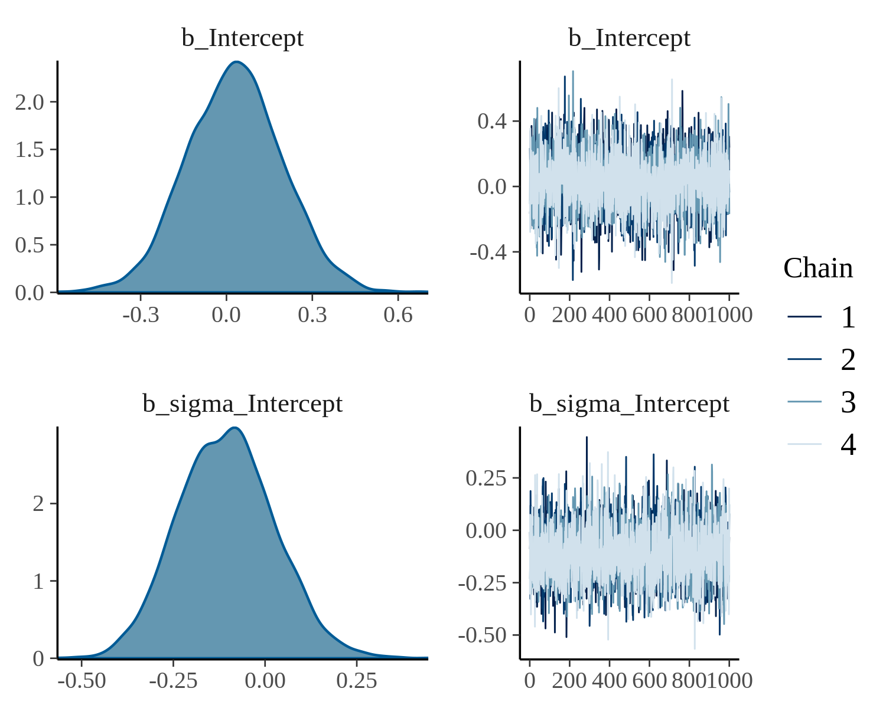
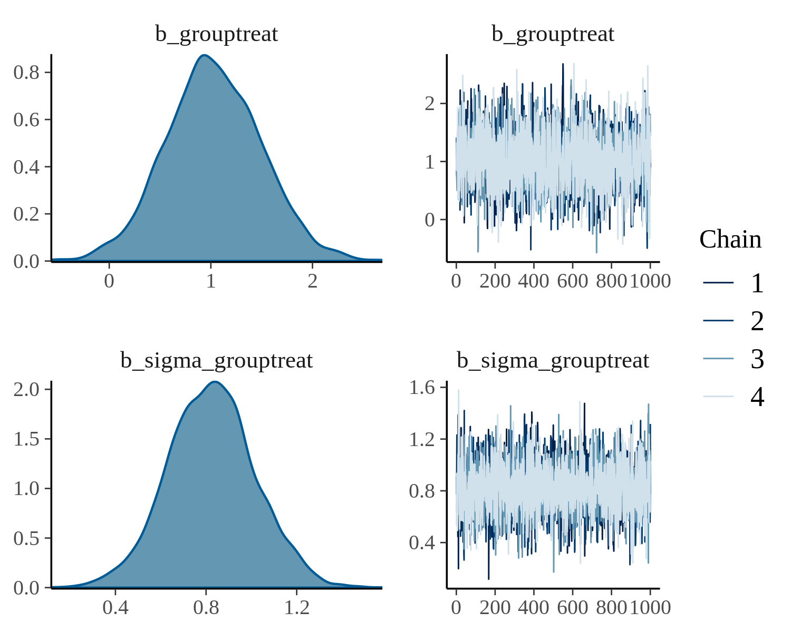
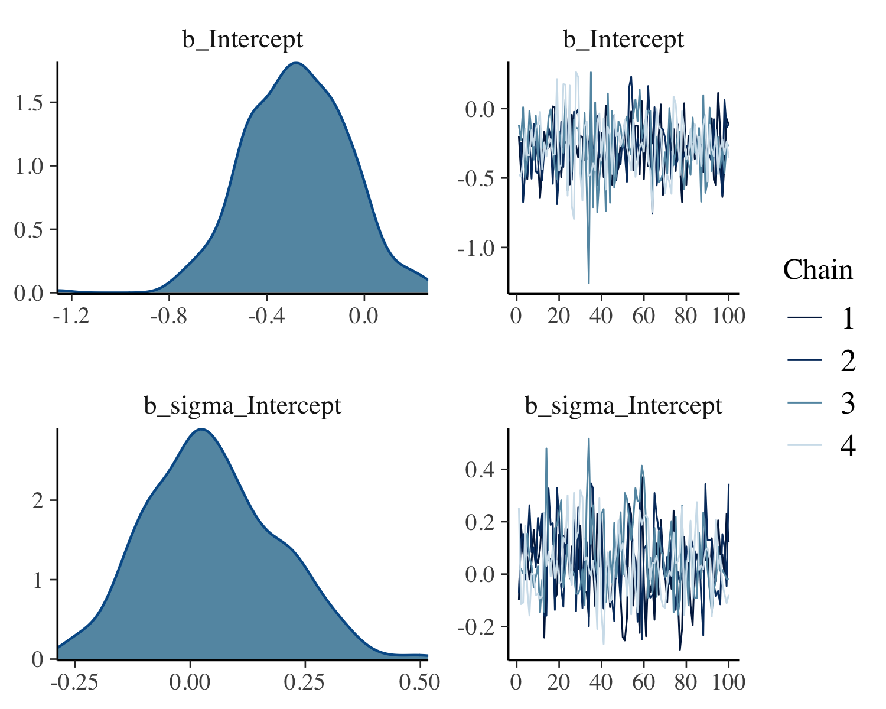
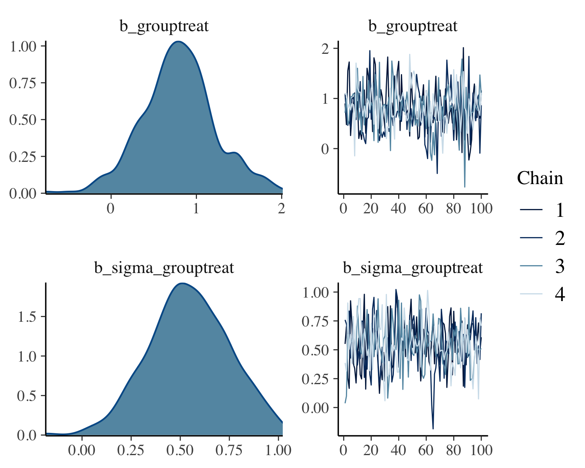
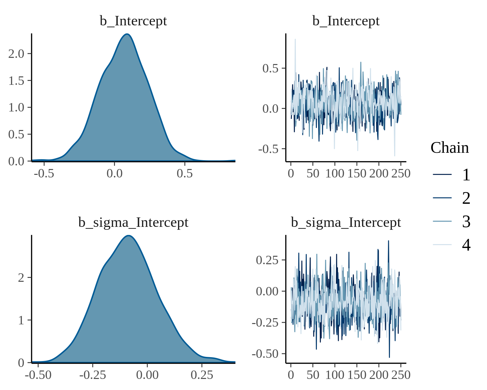
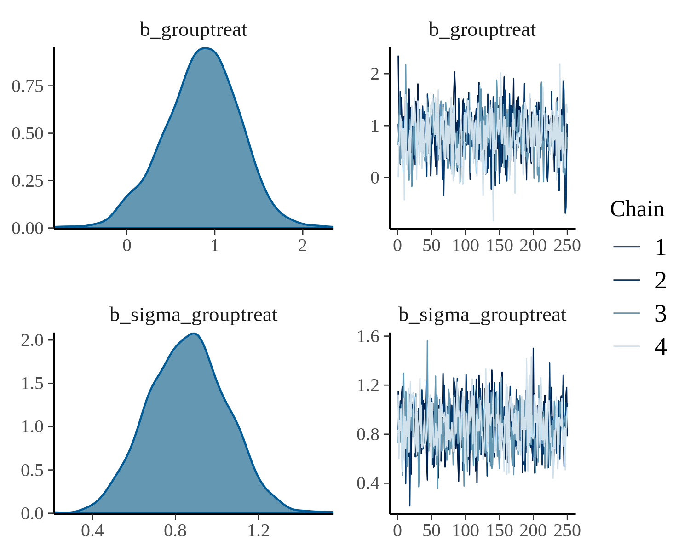
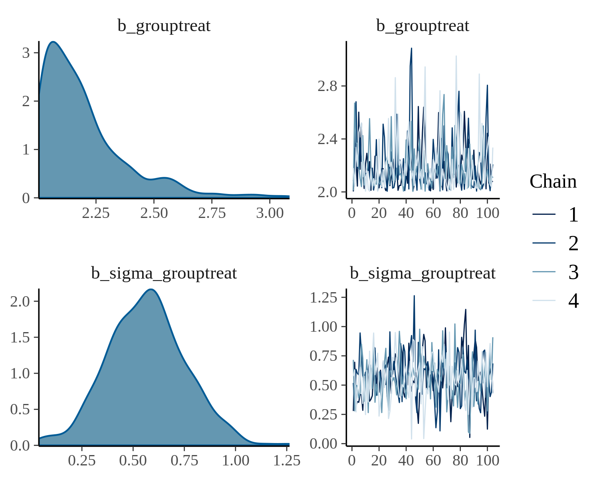
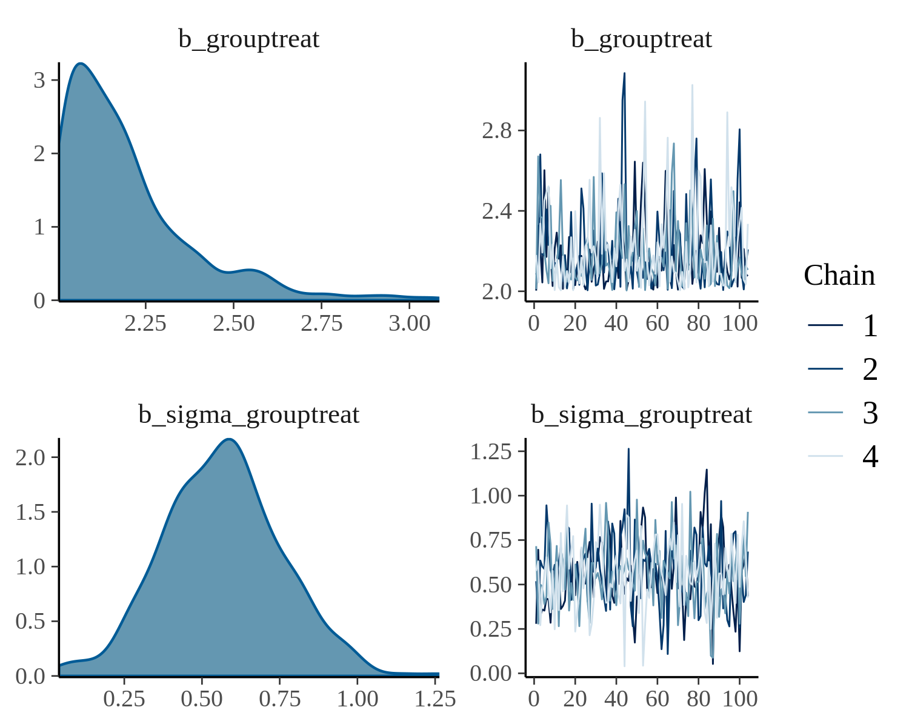
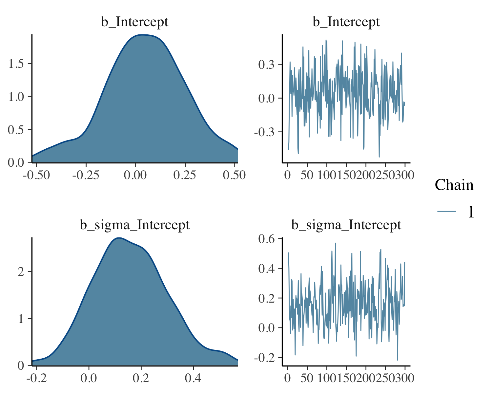
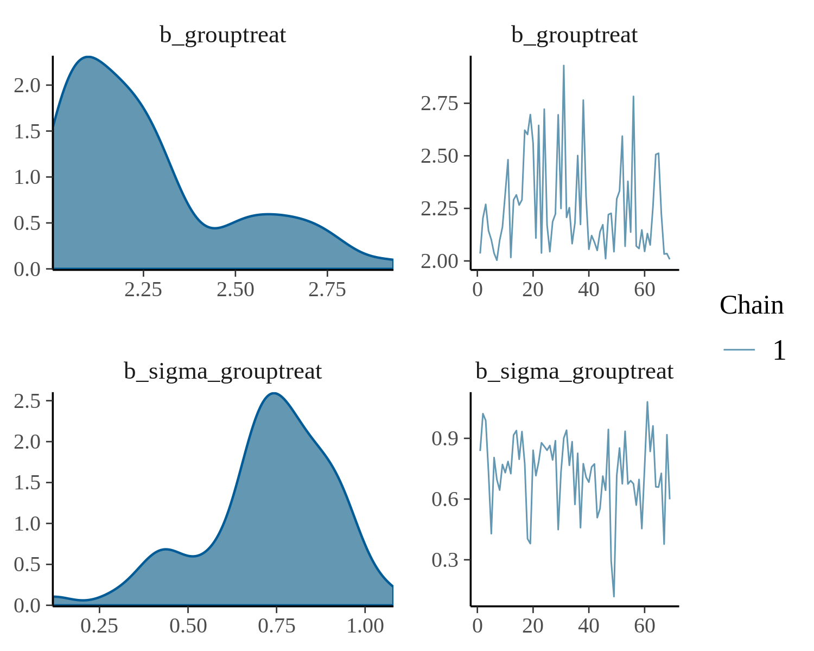

Run Model
Family: gaussian
Links: mu = identity; sigma = log
Formula: symptom_post ~ group
sigma ~ group
Data: dat1 (Number of observations: 60)
Samples: 4 chains, each with iter = 2000; warmup = 1000; thin = 1;
total post-warmup samples = 4000
Population-Level Effects:
Estimate Est.Error l-95% CI u-95% CI Rhat Bulk_ESS Tail_ESS
Intercept -0.02177 0.15085 -0.31759 0.27921 1.00378 4803 2803
sigma_Intercept -0.19021 0.13301 -0.42741 0.09924 0.99972 3754 2915
grouptreat 1.20988 0.36708 0.48348 1.94462 1.00148 2548 2377
sigma_grouptreat 0.76776 0.18740 0.39628 1.12659 1.00106 3667 2750
Samples were drawn using sampling(NUTS). For each parameter, Bulk_ESS
and Tail_ESS are effective sample size measures, and Rhat is the potential
scale reduction factor on split chains (at convergence, Rhat = 1).fit%>% plot(N = 2, ask = FALSE)

Select first 100 Posterior Samples from each Chain
fit_slice <- fit%>%stan_slice(1:100)
Family: gaussian
Links: mu = identity; sigma = log
Formula: symptom_post ~ group
sigma ~ group
Data: dat1 (Number of observations: 60)
Samples: 4 chains, each with iter = 1100; warmup = 1000; thin = 1;
total post-warmup samples = 400
Population-Level Effects:
Estimate Est.Error l-95% CI u-95% CI Rhat Bulk_ESS Tail_ESS
Intercept -0.02612 0.16041 -0.34713 0.32419 1.02522 452 309
sigma_Intercept -0.18757 0.13576 -0.41387 0.10167 1.00565 412 311
grouptreat 1.18093 0.37903 0.43960 1.86378 1.02284 173 259
sigma_grouptreat 0.76551 0.19286 0.37372 1.09767 1.01414 397 248
Samples were drawn using sampling(NUTS). For each parameter, Bulk_ESS
and Tail_ESS are effective sample size measures, and Rhat is the potential
scale reduction factor on split chains (at convergence, Rhat = 1).fit_slice%>% plot(N = 2, ask = FALSE)

Thin 25% of Posterior Samples from each Chain
fit_thin <- fit%>% stan_thin_frac(0.25)
Family: gaussian
Links: mu = identity; sigma = log
Formula: symptom_post ~ group
sigma ~ group
Data: dat1 (Number of observations: 60)
Samples: 4 chains, each with iter = 1250; warmup = 1000; thin = 1;
total post-warmup samples = 1000
Population-Level Effects:
Estimate Est.Error l-95% CI u-95% CI Rhat Bulk_ESS Tail_ESS
Intercept -0.01217 0.15271 -0.29943 0.28213 1.00052 1098 961
sigma_Intercept -0.18890 0.13348 -0.41992 0.09984 0.99916 1048 988
grouptreat 1.19453 0.36537 0.51006 1.92717 1.00672 921 915
sigma_grouptreat 0.77022 0.18671 0.38841 1.12669 0.99931 1049 931
Samples were drawn using sampling(NUTS). For each parameter, Bulk_ESS
and Tail_ESS are effective sample size measures, and Rhat is the potential
scale reduction factor on split chains (at convergence, Rhat = 1).fit_thin%>% plot(N = 2, ask = FALSE)

Filter Posterior Samples by Conditional
fit_filter <- fit%>% stan_filter(b_grouptreat>=1)
Family: gaussian
Links: mu = identity; sigma = log
Formula: symptom_post ~ group
sigma ~ group
Data: dat1 (Number of observations: 60)
Samples: 4 chains, each with iter = 1702; warmup = 1000; thin = 1;
total post-warmup samples = 2808
Population-Level Effects:
Estimate Est.Error l-95% CI u-95% CI Rhat Bulk_ESS Tail_ESS
Intercept -0.05212 0.14254 -0.33914 0.23209 1.00099 3516 1815
sigma_Intercept -0.19167 0.13226 -0.42626 0.09474 0.99939 2189 1900
grouptreat 1.38065 0.26186 1.01924 2.00972 1.00266 1684 1616
sigma_grouptreat 0.76518 0.18719 0.38536 1.11464 1.00224 2413 1906
Samples were drawn using sampling(NUTS). For each parameter, Bulk_ESS
and Tail_ESS are effective sample size measures, and Rhat is the potential
scale reduction factor on split chains (at convergence, Rhat = 1).fit_filter%>% plot(N = 2, ask = FALSE)
 

Filter Posterior Samples by Conditional Subset Chain
fit_filter_chain <- fit%>% stan_filter(b_grouptreat>=1)%>% stan_retain(chains = 1)
Family: gaussian
Links: mu = identity; sigma = log
Formula: symptom_post ~ group
sigma ~ group
Data: dat1 (Number of observations: 60)
Samples: 1 chains, each with iter = 1702; warmup = 1000; thin = 1;
total post-warmup samples = 702
Population-Level Effects:
Estimate Est.Error l-95% CI u-95% CI Rhat Bulk_ESS Tail_ESS
Intercept -0.06152 0.14469 -0.33933 0.23035 1.00156 837 432
sigma_Intercept -0.18756 0.13138 -0.41385 0.10425 1.00133 508 614
grouptreat 1.39656 0.26715 1.01459 2.02818 1.00767 368 384
sigma_grouptreat 0.76097 0.17997 0.37433 1.09105 1.00797 580 582
Samples were drawn using sampling(NUTS). For each parameter, Bulk_ESS
and Tail_ESS are effective sample size measures, and Rhat is the potential
scale reduction factor on split chains (at convergence, Rhat = 1).fit_filter_chain%>% plot(N = 2, ask = FALSE)
